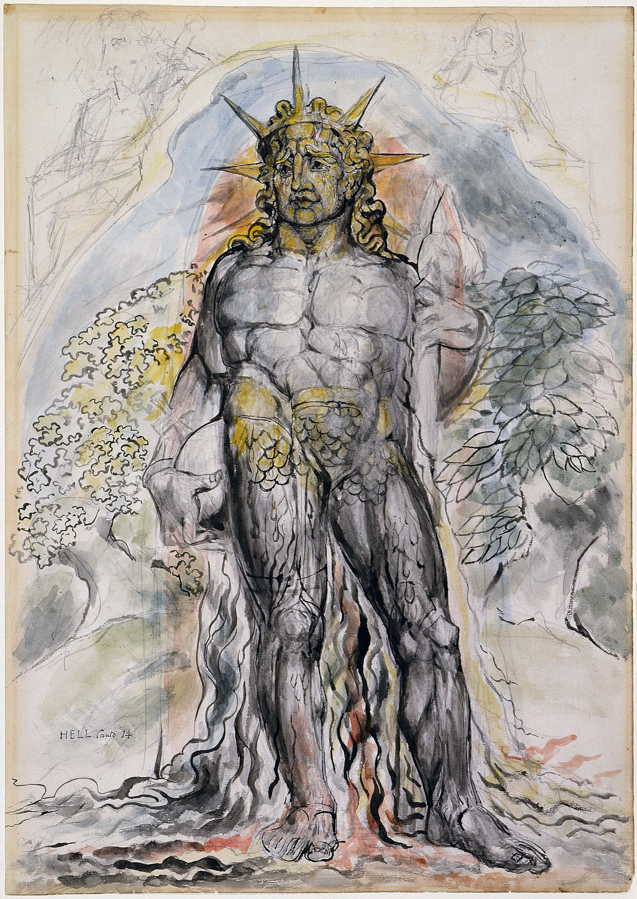

Khai Evdaev
CS PhD Student @ Princeton University

About
I am a Computer Science PhD student working at the intersection of generative modeling, reasoning systems, and AI alignment. My research includes diffusion models for biological data and hierarchical reasoning architectures.
My undergraduate training at Boston University spanned mathematics, philosophy, computer science, and economics. I draw on this background to study the epistemic and philosophical foundations of AI, with a focus on alignment, belief formation, and uncertainty in agentic systems.
Research
Generative modeling for single-cell biology. I study how diffusion models represent biological trajectories, with a focus on latent transport, branching dynamics, and evaluation.
Hierarchical reasoning models. I investigate how training dynamics and information structure affect generalization and emergent specialization in reasoning systems.
Epistemic calibration and verification in LLM agents. I investigate how agentic systems form and revise beliefs under partial feedback, and how calibration interacts with verification, iteration, and reliability in code generation and reasoning tasks.
Projects
- Squidiff Evaluation — latent transport analysis for single-cell diffusion models.
- Hierarchical Reasoning Models — adaptive computation and information separation.
- HybridPGMLIPP — hybrid learned index structure for dynamic workloads.